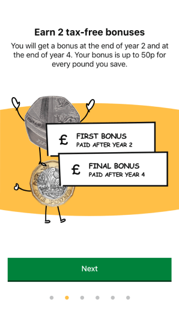

CLIENT
HMRC
DATE
2021
ROLES
UX designUI design
COLLABORATORS
User ResearcherContent Designer
The gist
The HMRC mobile app has over 500k users per month and over 100k ratings on the App and Play store at an average of 4.7 stars. It’s incredibly important to keep this loyal user base engaged so we were often iterating on features within the app to improve the experience. I was tasked with assessing the app and making improvements to help get people into the habit of saving.
Skills used
Stakeholder engagement, Miro planning, User testing, Research and analysis, Wireframing, Sketch, Prototyping, User testing

Help to Save onboarding.